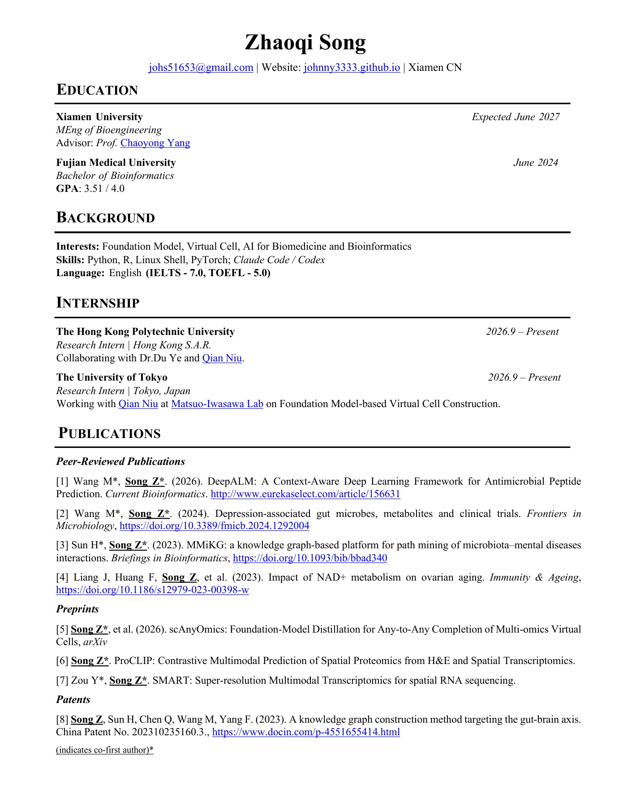
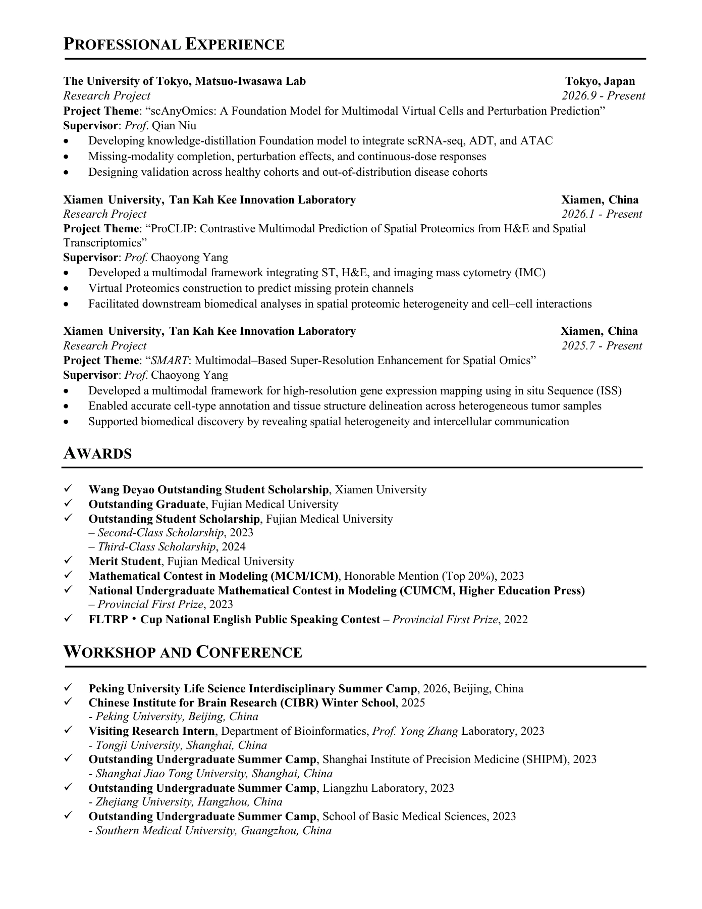

Academic CV
Zhaoqi Song
Education, research experience, publications, and academic activities.


Select a page to enlarge, or download the original PDF above.
Academic CV
Education, research experience, publications, and academic activities.


Select a page to enlarge, or download the original PDF above.